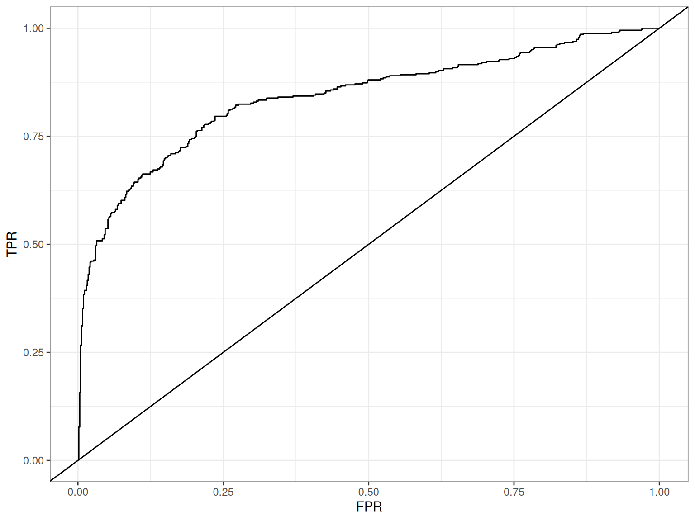
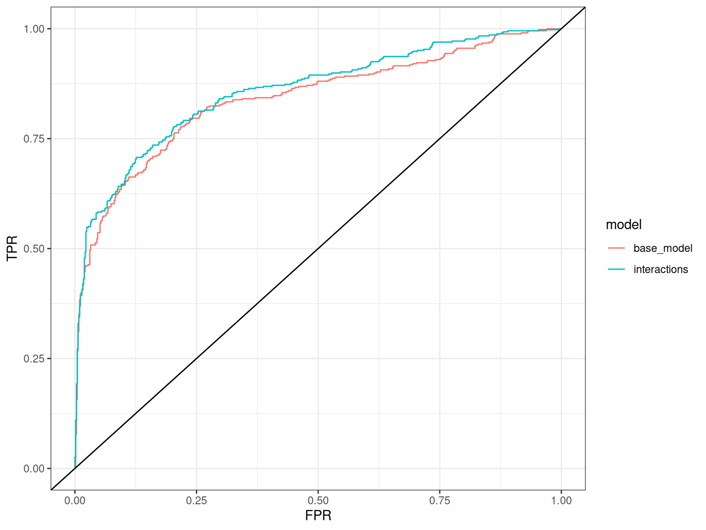

library(tidyverse)
library(carData)
theme_set(theme_bw())Extended Statistics In R
RAdelaide 2025
Dr Stevie Pederson
Black Ochre Data Labs
The Kids Research Institute Australia
The Kids Research Institute Australia
July 10, 2025
Beyond Linear Regression
Beyond Linear Regression
- Linear Regression relies on Normally Distributed residuals
- We can estimate points and data will be normally distributed around the estimates
- This relies on the mean (\(\mu\)) and standard deviation (\(\sigma\)) being independent
- And on data being continuous
- Some data is not normally distributed
- Discrete data
- Probabilities and proportions
Generalised Linear Models
- We often use a generalisation of linear modelling to fit these models
- Formally known as Generalised Linear Models (GLMs)
- Cannot be fit using Least Squares
- Parameter estimates by maximising likelihood functions
- Use iterative solutions to converge
- Always have an underlying distribution used for parameter estimation
- Poisson Distribution: Log-linear Model
- Binomial Distribution: Logistic Regression
Logistic Regression
- Logistic regression estimates the probablity (\(\pi\)) of an event occurring
- A binary outcome \(\implies\) Success Vs Failure
- Can also be considered a classification problem
- Heavily used in machine learning
- Probabilites are bound at [0, 1]
- makes fitting challenging near boundary points
- Probabilities are transformed using the logit transformation
- Transforms values on [0, 1] to \([-\infty, \infty]\)
The Logit Transformation
\[ \text{logit}(\pi) = \log \frac{\pi}{1-\pi} \]
- \(\pi = 0.5\) \(\rightarrow\) logit \((\pi) = \log \frac{0.5}{0.5} = 0\)
- \(\pi = 0\) \(\rightarrow\) logit \((\pi) = \log \frac{0}{1} = -\infty\)
- \(\pi = 1\) \(\rightarrow\) logit \((\pi) = \log \frac{1}{0} = \infty\)
The Logit Transformation
- Parameters from logistic regression estimate \(\text{logit}(\pi)\)
- Estimates near zero \(\implies \pi = 0.5\)
- Estimates above zero \(\implies \pi > 0.5\)
- Estimates below zero \(\implies \pi < 0.5\)
An Example Of Logistic Regression
- A perfect example for logistic regression \(\implies\) survivors of the Titanic!
- Available in the package
carData- If you don’t have this installed:
install.packages(c("car", "carData")) - The package
caris the Companion to Applied Regression (not broom brooms)
- If you don’t have this installed:
- Start a new R session and new R script
The Titanic Survivors
- Let’s tidy up the data first
The Titanic Survivors
- And a quick preview using only the categorical variables
titanic_tbl |>
count(survived, sex, passengerClass) |>
pivot_wider(names_from = survived, values_from = n) |>
mutate(
prob = yes / (no + yes)
)# A tibble: 6 × 5
sex passengerClass no yes prob
<fct> <fct> <int> <int> <dbl>
1 female 1st 5 128 0.962
2 female 2nd 11 92 0.893
3 female 3rd 80 72 0.474
4 male 1st 98 53 0.351
5 male 2nd 135 23 0.146
6 male 3rd 290 59 0.169- It looks rather like sex and class might play a role
The Titanic Survivors
- For logistic regression, we need to specify the underlying distribution
\(\implies\)family = binomial - This tells
glmwe are fitting binomial probabilities
The Titanic Survivors
Call:
glm(formula = survived ~ sex + age + passengerClass, family = binomial,
data = TitanicSurvival)
Coefficients:
Estimate Std. Error z value Pr(>|z|)
(Intercept) 3.522074 0.326702 10.781 < 2e-16 ***
sexmale -2.497845 0.166037 -15.044 < 2e-16 ***
age -0.034393 0.006331 -5.433 5.56e-08 ***
passengerClass2nd -1.280570 0.225538 -5.678 1.36e-08 ***
passengerClass3rd -2.289661 0.225802 -10.140 < 2e-16 ***
---
Signif. codes: 0 '***' 0.001 '**' 0.01 '*' 0.05 '.' 0.1 ' ' 1
(Dispersion parameter for binomial family taken to be 1)
Null deviance: 1414.62 on 1045 degrees of freedom
Residual deviance: 982.45 on 1041 degrees of freedom
(263 observations deleted due to missingness)
AIC: 992.45
Number of Fisher Scoring iterations: 4- How would we interpret these coefficients?
- What does the Intercept represent?
The Titanic Survivors
- For a 50yo woman in 1st Class
- This is > 0 \(\implies\) >50% chance of survival
Making Predictions
- We could obtain a probability for each passenger
- Might be considered to be training a model
titanic_tbl |>
## Setting type = "response" will transform back to [0,1]
mutate(prob_survival = predict(titanic_glm, type = "response")) |>
arrange(desc(prob_survival))# A tibble: 1,046 × 6
name survived sex age passengerClass prob_survival
<chr> <fct> <fct> <dbl> <fct> <dbl>
1 Allison, Miss. Helen Lorai… no fema… 2 1st 0.969
2 Carter, Miss. Lucile Polk yes fema… 14 1st 0.954
3 Madill, Miss. Georgette Al… yes fema… 15 1st 0.953
4 Hippach, Miss. Jean Gertru… yes fema… 16 1st 0.951
5 Lines, Miss. Mary Conover yes fema… 16 1st 0.951
6 Maioni, Miss. Roberta yes fema… 16 1st 0.951
7 Dick, Mrs. Albert Adrian (… yes fema… 17 1st 0.950
8 Penasco y Castellana, Mrs.… yes fema… 17 1st 0.950
9 Astor, Mrs. John Jacob (Ma… yes fema… 18 1st 0.948
10 Marvin, Mrs. Daniel Warner… yes fema… 18 1st 0.948
# ℹ 1,036 more rowsChecking Predictions
- If building a predictive model we often use an ROC curve to check accuracy
- Order by probability then plot the True/False Positive Rates
titanic_tbl |>
mutate(prob_survival = predict(titanic_glm, type = "response")) |>
arrange(desc(prob_survival)) |>
mutate(
## Calculate the True Positive Rate as we step through the predictions
TPR = cumsum(survived == "yes") / sum(survived == "yes"),
## And the False Positive Rate as we step through in order
FPR = cumsum(survived == "no") / sum(survived == "no")
) |>
ggplot(aes(FPR, TPR)) +
geom_line() +
geom_abline(slope = 1)Checking Predictions

Testing Multiple Models
list(
base_model = glm(
survived ~ sex + age + passengerClass, data = titanic_tbl, family = binomial
),
interactions = glm(
survived ~ (sex + age + passengerClass)^2, data = titanic_tbl, family = binomial
)
) |>
lapply(\(x) mutate(titanic_tbl, pi = predict(x, type = "response"))) |>
bind_rows(.id = "model") |>
arrange(model, desc(pi)) |>
mutate(
TPR = cumsum(survived == "yes") / sum(survived == "yes"),
FPR = cumsum(survived == "no") / sum(survived == "no"),
.by = model
) |>
ggplot(aes(FPR, TPR, colour = model)) +
geom_line() +
geom_abline(slope = 1)Testing Multiple Models

A Brief Comment
- If using logistic regression in this context:
- Usually break data into a training & test set
- Assess the performance on the test set after training
- This forms the basis of some Machine Learning techniques
Mixed-Effects Models
Mixed-Effects Models
- Mixed-effects models are very common within ecological research
- Need to understand the difference between fixed and random effects
- Linear Regression fits fixed effects
- Assumes the estimated effect is effectively the same across experiments
- Reproducible
- Random effects are the effects of a variable that is not fixed
- e.g. the effect of a particular site on a response variable
- The effect of a site is not fixed, it varies across sites
- We can model this variation using random effects
Mixed-Effects Models
- How do we model random effects?
- I learned these as nested models fitting within distinct groups defined by random variables
- Could be the date of a delivery
\(\implies\) can be observed and modelled but not reproduced- The Intercept term for each group (\(i\)) is \(\mu_i \sim \mathcal{N}(\mu, \sigma_{\mu})\)
- Response terms follow standard regression assumptions e.g. \(e_{ij} \sim \mathcal{N}(0, \sigma)\)
- We have two components to the variance
Mixed-Effects Models
- The syntax in
Ris super-clumsy - Most commonly, people use the package
lme4and the functionlmer()- Early mixed-effects models used
nlme\(\implies\) no longer supported
- Early mixed-effects models used
- We are measuring productivity using machines A, B or C (fixed)
- Nested within each of 6 factory workers
- Each individual will have different productivity
\(\implies\) measurable & modellable but random across the population
Mixed-Effects Models
- To denote the nesting or random effect
(1 | Worker)Machineis specified as per usual for fixed effects
Linear mixed model fit by REML ['lmerMod']
Formula: score ~ Machine + (1 | Worker)
Data: Machines
REML criterion at convergence: 286.9
Scaled residuals:
Min 1Q Median 3Q Max
-2.7249 -0.5233 0.1328 0.6513 1.7559
Random effects:
Groups Name Variance Std.Dev.
Worker (Intercept) 26.487 5.147
Residual 9.996 3.162
Number of obs: 54, groups: Worker, 6
Fixed effects:
Estimate Std. Error t value
(Intercept) 52.356 2.229 23.485
MachineB 7.967 1.054 7.559
MachineC 13.917 1.054 13.205
Correlation of Fixed Effects:
(Intr) MachnB
MachineB -0.236
MachineC -0.236 0.500Mixed-Effects Models
- This output looks very different
- We have Random effects and Fixed Effects
- No \(p\)-values!!!
- The intercept gives the average score for Machine A
- The random effects indicate how these scores vary across workers
- We have an estimate and a standard error \(\implies t\)-statistic
- Degrees of freedom are controversial for mixed-effects models
- Can’t determine the \(t\)-distribution to use for \(p\)-values
Mixed-Effects Models
- A compromise is to use
lmerTestbefore fitting - Provides \(p\)-values
- Discussion is beyond the scope of this course (& my knowledge)
library(lmerTest)
machines_lmer <- lmer(score ~ Machine + (1 | Worker) , data = Machines)
summary(machines_lmer) |> coef() Estimate Std. Error df t value Pr(>|t|)
(Intercept) 52.355556 2.229312 5.833185 23.48507 5.328296e-07
MachineB 7.966667 1.053882 46.000000 7.55935 1.329432e-09
MachineC 13.916667 1.053882 46.000000 13.20514 2.933231e-17Generalised Mixed-Effects Models
- GLMMs are also heavily used in ecology \(\implies\) require genuine understanding
- Very heavy on linear algebra
- Ben Bolker is the undisputed GLMM heavyweight
lme4has implementedglmer()- Additional GLMM fitting in the packages
glmmADMBandglmmTMB- Useful for challenging datasets
- Doug Bates (
nlme) was a member of R Core but has left theRcommunity